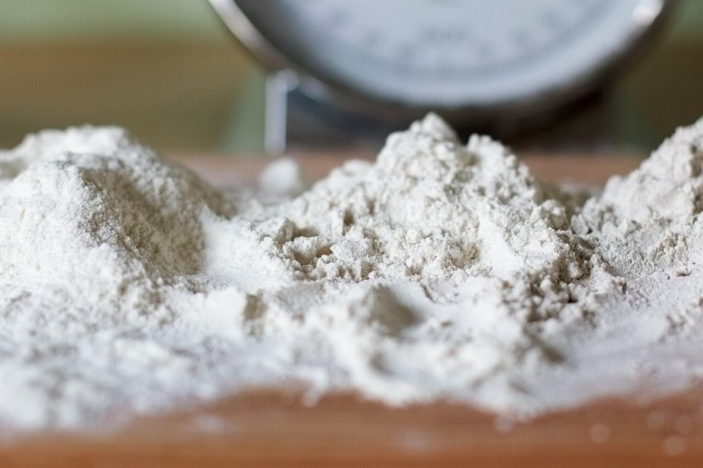

パン屋 / 島根県松江市宍道町
コパン
ブーランジェリー
島根県松江市宍道町のパン屋「ブーランジェリー コパン」のご案内ページです。営業時間やメニューなど、詳しいことは準備中。まずはInstagramをのぞいてみてください。
制作側の連想
「コ」と「パン」を、シーソーの両端に
制作側の連想です。お店の理念・屋号の由来とは無関係です。店名は「コ」と「パン」の二つに分けて眺められる、と考え、公園のシーソーを思い浮かべました。片方が上がればもう片方は下がる。このサイトは、写真や項目を二つずつ向かい合わせ、板の傾きを変えながら並べています。写真はすべてフリー素材のイメージで、お店や商品を写したものではありません。
シーソー その1
表と中身、焼き色のちがい
上がる側
撮影地不明のイメージ
下がる側
撮影地不明のイメージ
左右どちらが上がるかは飾りです。優劣や商品の説明ではありません。
シーソー その2
材料と、窯のそば
上がる側撮影地不明のイメージ

下がる側
国外のイメージ(北キプロス)
シーソー その3
夕暮れと、細い道
上がる側
撮影地不明のイメージ
下がる側
撮影地不明のイメージ
ご案内
お店のこと(確認できたものだけ)
| 店名 | ブーランジェリー コパン(パン屋) |
|---|---|
| 所在地 | 〒699-0402 島根県松江市宍道町白石34 |
| 電話 | 0852-66-3132 |
| 営業時間 | 準備中 |
| 定休日 | 準備中 |
| ご予約 | 準備中 |
| 駐車場 | 準備中 |
| SNS | Instagram @copan_1020 |